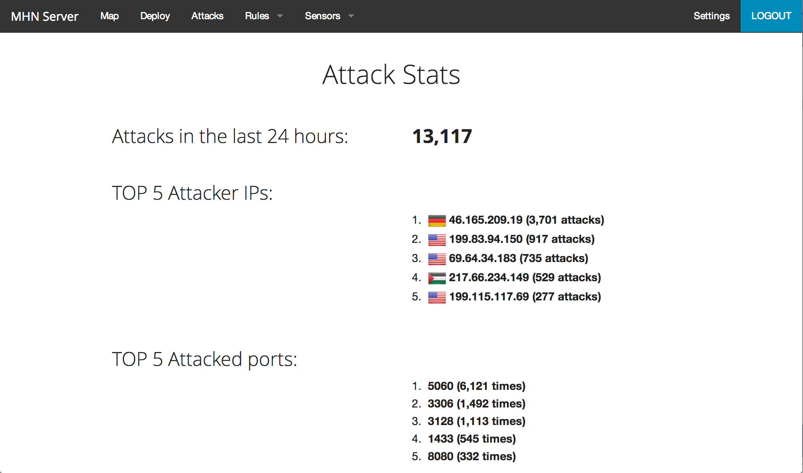
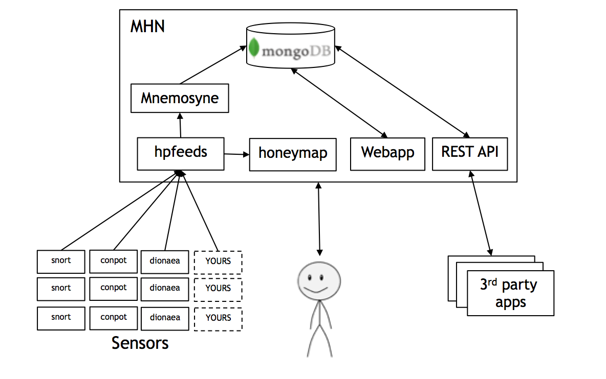

Honeypot's have not achieved wide adoption for cyber defense.
While honeypot technologies are very mature and provide rich threat intelligence and an "Active-Defense" strategy for organization, they have never been widely adopted. We think the reason is that honeypots have been too complicated to deploy and manage at scale.
The Modern Honey Network project makes deploying and managing secure honeypots extremely simple.
From the secure deployment to the aggregation of events with multiple honeypot and IDS support MHN has you covered.


Watch the video to help get started:
Or get right to the good stuff:
$ cd /opt/
$ git clone https://github.com/threatstream/mhn.git
$ cd mhn/scripts/
$ sudo ./install_hpfeeds.sh
$ sudo ./install_mnemosyne.sh
$ sudo ./install_honeymap.sh
$ sudo ./install_mhnserver.sh
Current supported honeypots
- Snort
- Dionaea
- Conpot
- Kippo
- Easily add new ones!
Support or Contact
MHN is an open source project brought to you by the passionate folks at ThreatStream. We will lend a hand if needed, find us at: support@threatstream.com